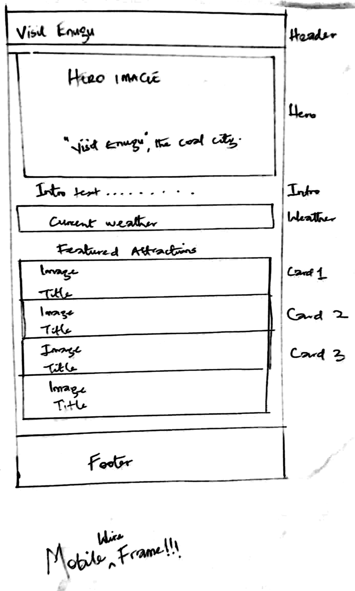
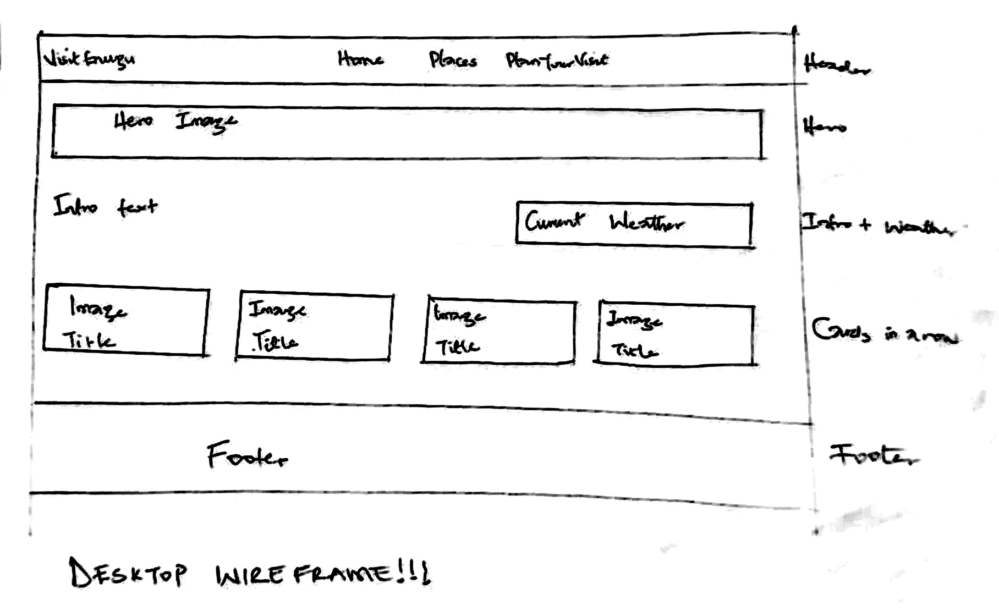

1. Site Name
Visit Enugu
- The name says plainly what the site is for: helping people visit Enugu, Nigeria.
- It is short, easy to remember and easy to search for, and "Coal City", the nickname of Enugu, is used as the tagline.
Optional domain idea: visit-enugu.com
2. Site Purpose
Information about Enugu is scattered, outdated or incomplete online. The site gives visitors and newcomers one clear place to see what Enugu offers and how to plan a trip. It has three pages:
- Home: introduces Enugu and shows featured attractions and the current weather.
- Places: lists attractions such as the Awhum Waterfall, Udi Hills, Nike Lake Resort and Ngwo Pine Forest. Visitors can filter them by category, and the places are loaded from a JSON file.
- Plan Your Visit: covers local food, getting around and the best time to visit, plus a contact form for questions.
3. Scenarios
Questions a target visitor would ask:
- What are the best places to visit in Enugu, and can I filter them by type, such as waterfalls, hills or resorts?
- What is the weather in Enugu right now, and when is the best time of year to visit?
- What local food should I try, and how do I get around the city?
- How can I ask a question about planning my trip?
4. Color Scheme
The scheme takes its cue from coal and fire: a dark coal base, a warm ember accent and a soft cream background. It is used on this document.
| Swatch | Name | Hex | Where it is used |
|---|---|---|---|
| Coal | #1F2A2E |
Headings, body text, header and footer backgrounds, links | |
| Ember | #E07B39 |
Accents: buttons, borders, navigation bar background, table header | |
| Cream | #F4EFE6 |
Page background and text on dark backgrounds |
Ember is only used as a background behind coal text. Coal on ember has a contrast ratio of about 4.9:1, and cream on coal is above 12:1.
5. Typography
- Poppins (600 and 700): used for the site name, page headings and buttons.
- Open Sans (400 and 600): used for paragraphs, lists, navigation and form text.
Sample heading in Poppins
Sample paragraph in Open Sans: Enugu sits among hills and is known for its cool weather and green spaces.
6. Wireframe
Hand-drawn black and white sketches of the home page.

